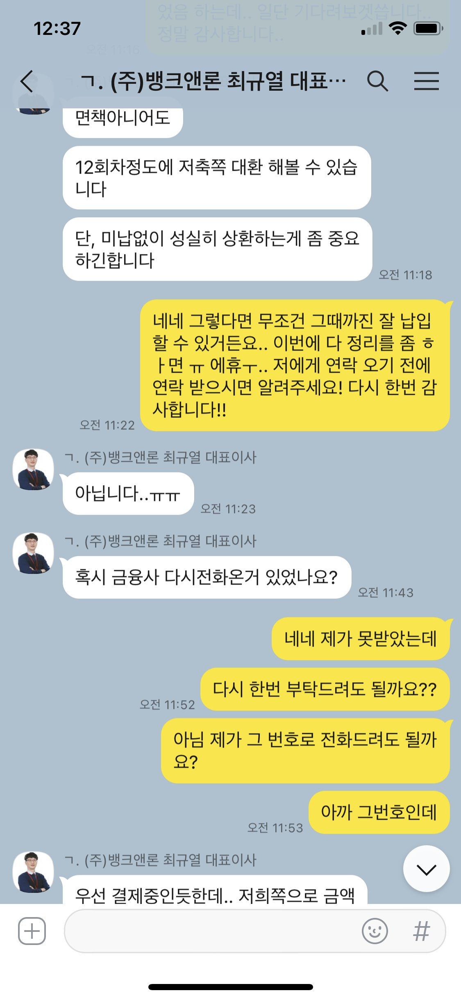

최규열 이사님, 다시 한번 감사드립니다.
직장인 / 4대보험가입 유 / 1년 7개월 재직 중 / 월급여 190 / 개인회생 월 변제 98
신용등급: 8월 초 회생 인가 상태 / 변제현황 조회 가능
채무내역: 회생 후 사건번호 200 대출 (143 남음) / 개시 500 대출 (2회 납)
필요서류: 초본, 신분증앞면 사본,
입금계좌 사본, 건강보험득실확인서 및
건강보험납부확인서,
급여통장 입출금 3개월 내역,
재직확인 전화 대신 재직증명서 제출,
인가 직후 바로 했을때 여기저기 부결이 많았지만,
일주일만에 변제현황 조회가 가능해서
바로 진행했는데
한군데 부결 후 다른 한군데서 143 남은거 대환
및 추가 자금까지 해서 총 700 받았습니다.
계속해서 알아봐주셔서 정말 감사합니다.
개시 후부터 인가까지,
덕분에 개인적으로 빌린 부분 다 해결하고
이제 월 변제금과 대출 2건만 잘 갚아나가면 되서
진짜 마음이 너무 편하네요.
잘 변제하다가 이사님께서 말씀해주신 시기에
저축 대환으로 갈아타겠습니다.
정말 다시 한번 더 감사합니다..!
